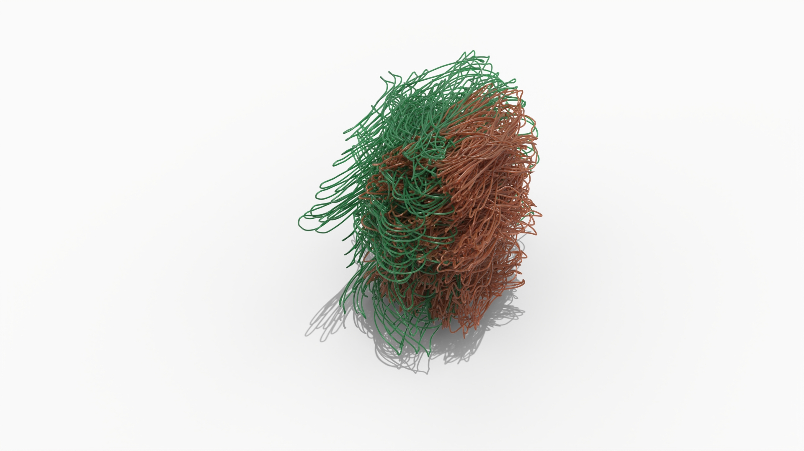
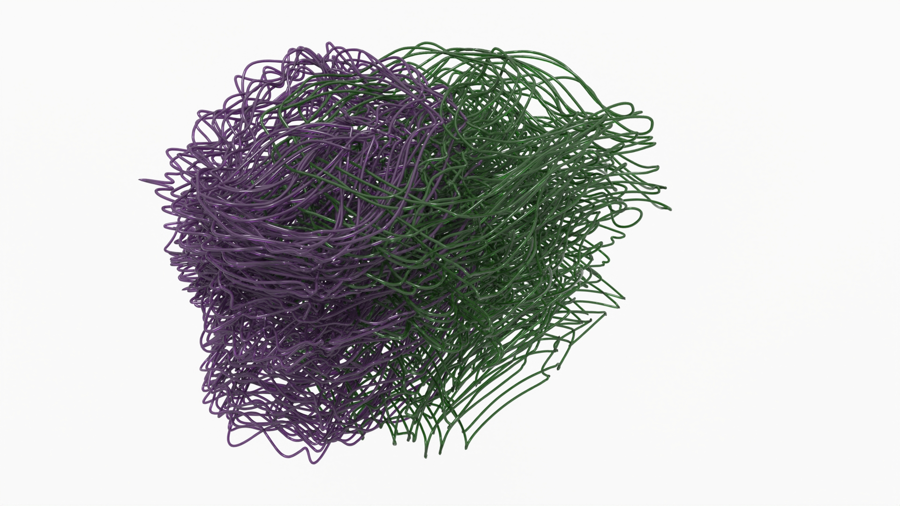

2024
PHANTOM PARTNER
never dance alone
Phantom Partner learns the motion patterns of five social dance styles—waltz, chacha, salsa, samba, swing—and predicts the follower trajectory directly from the leader. Skeletons are processed from mocap (C3D/FBX) into NumPy, a classifier cleans styles, and a lightweight GRU model synthesizes the partner. Results are exported for Blender as curves/meshes for rendering and 3D fabrication.
CONTEXT
Drawing ++
MIT Media Lab
SOFTWARE + TOOLS
Python, PyTorch, NumPy, Open3D, Blender, PowerShell, Matplotlib
As someone who practices ballroom dancing, I often encounter a persistent challenge: not having a partner to dance with. This is a common issue in ballroom, since it is a progressive dance form with no fixed choreography. Instead, the person in the "leader" role uses their body to guide the "follower" through steps improvised in the moment. As a result, dancing alone in ballroom styles is not truly possible. This project addresses that problem by using machine learning to predict the motions of the "follower" based on the steps performed by the leader.
DATA → MODEL → PARTNER
End-to-end pipeline

1) Ingest. FBX/C3D clips from Mixamo, CMU, and HDM05 are converted to .npy arrays (shape: [frames, markers, 3]).
2) Normalize. Clips are recentered on the root, scaled, and saved as _norm.npy for consistency.
3) Relabel to 5 styles. “Rumba” → chacha; “Charleston”/“Lindy Hop” → swing; final set: chacha, salsa, samba, swing, waltz.
4) Classify & curate. A small PointNet-style classifier filters clean exemplars (confidence ≥ 0.80).
5) Partner model. A 2-layer GRU takes leader positions + velocities (and style one-hot) over K frames and emits the follower positions frame-by-frame.
6) Export & visualize. Predicted partner sequences are turned into curves/meshes and brought into Blender for lighting and renders.


_norm.png)
_norm.png)

LEARNING THE PARTNER
From leader motion to duet synthesis


Training uses sliding windows of length K (e.g., 16–32). For each window, the input is the leader’s [x,y,z] and velocity Δ[x,y,z] per marker, concatenated with a style one-hot; the GRU predicts the follower’s [x,y,z]. Overlapping windows are averaged to produce the full sequence.
Validation loss on 44-marker set reached ~0.07 (normalized units), producing smooth, style-aware partners.
RESULTS
Five styles, many duets
RESULTS
Five styles, many duets
EXPORT FOR BLENDER
Curves → extrusion → lighting
Leader and predicted follower are saved as .obj curve-like polylines and as mesh “ribbons” for immediate rendering. Blender’s modifiers (Solidify, Subdivision, Array) are used to stylize traces into sculptural forms suitable for print or animation.

